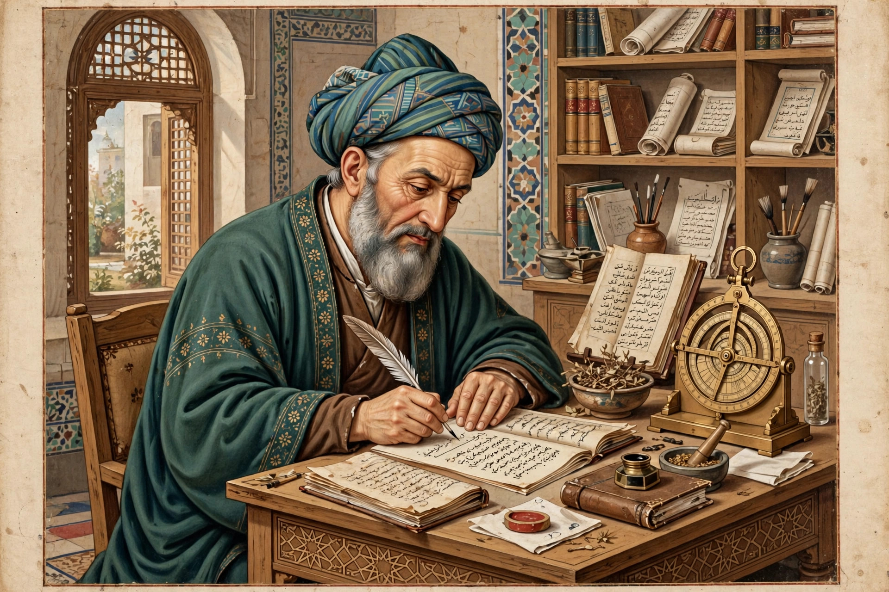

| Ibn Sina (Avicenna) | |
|---|---|
 | |
| Born | c. 980, Afshana, near Bukhara (Samanid Empire) |
| Died | June 1037 (aged 56–57), Hamadan |
| Fields | Medicine, philosophy, logic, astronomy, mathematics |
| Major works | The Canon of Medicine; The Book of Healing |
| Era | Islamic Golden Age |
Ibn Sina (Persian: ابن سینا; c. 980 – June 1037), known in the Latin West as Avicenna, was a Persian polymath of the Islamic Golden Age — physician, philosopher, logician, astronomer, and poet — regarded as one of the most influential thinkers of the medieval world. His Canon of Medicine remained a standard medical textbook in Europe into the 17th century, and his philosophical synthesis shaped both Islamic thought and Latin scholasticism.
Abu Ali al-Husayn ibn Abd Allah ibn Sina was born in the village of Afshana near Bukhara, then capital of the Samanid Empire. A precocious child, he had memorised the Quran by age ten and, by his own account in his autobiography, mastered medicine by sixteen — finding it "not difficult" — and the whole of philosophy and science by eighteen. His successful treatment of the Samanid emir Nuh II won him access to the royal library of Bukhara, which he later recalled as a wonder of manuscripts in room after room. When the Samanid state collapsed, Ibn Sina began a wandering career among the courts of Khwarazm, Gorgan, Ray, and Isfahan, practising medicine, serving twice as vizier in Hamadan, enduring imprisonment and political upheaval, and writing constantly — often, legend holds, even while travelling or in prison. He died in Hamadan in 1037 and is buried there under a celebrated mausoleum.
The Al-Qānūn fī al-Ṭibb (Canon of Medicine) systematised the medicine of the Greek, Indian, and earlier Arabic traditions in five books covering general principles, materia medica, diseases of particular organs, fevers and injuries, and compound drugs. Translated into Latin in 12th-century Toledo, it became a cornerstone of European medical education for five centuries. Ibn Sina recognised the contagious nature of tuberculosis, described the spread of disease through water and soil, advocated quarantine, and gave precise accounts of conditions from meningitis to diabetes.
His great philosophical encyclopedia Kitāb al-Shifāʾ (The Book of Healing) covers logic, natural philosophy, mathematics, and metaphysics. Ibn Sina drew a famous distinction between essence and existence, arguing that all contingent things require a "Necessary Existent" — God — whose existence follows from his essence; the proof influenced Aquinas and Duns Scotus. His "Flying Man" (or "Floating Man") thought experiment — a person created floating in air, deprived of all sensation, who would still affirm his own existence — anticipated arguments about self-consciousness for centuries. In natural philosophy he developed a theory of motion in which a projectile's inclination (mayl) persists unless resisted, a step toward the concept of inertia, and he criticised Aristotelian views on vision and the indivisibility of the atom. Some 240 works attributed to him survive, including the medical poem Urjuza fi al-Tibb and the shorter philosophical compendium Al-Isharat wa al-Tanbihat ("Pointers and Reminders").
Known in the Islamic world as al-Shaykh al-Raʾīs ("the Chief Master"), Ibn Sina is honoured as a national figure in Iran and Central Asia; his image has appeared on currency and monuments, and his name is given to hospitals, universities, and a crater on the Moon.
See also: House of Wisdom · The Canon of Medicine · Islamic Golden Age